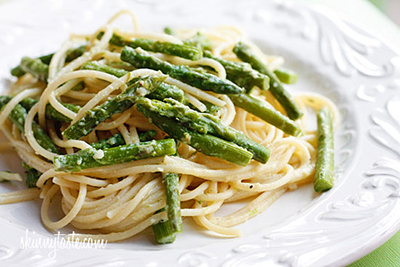

My Favourite Food
Aspargus Pesto
This is the best recepie you'll ever make!

Ingredients
- Pasta
- Aspargus
- Pine Nutss
- Parmesan Cheese
- Lemon Zest
Directions
- Boil Water
- Cook Pasta
- Blend other ingredients
- Top with Cheese
For more information, check out Skinny Taste - Pasta With Aspargus